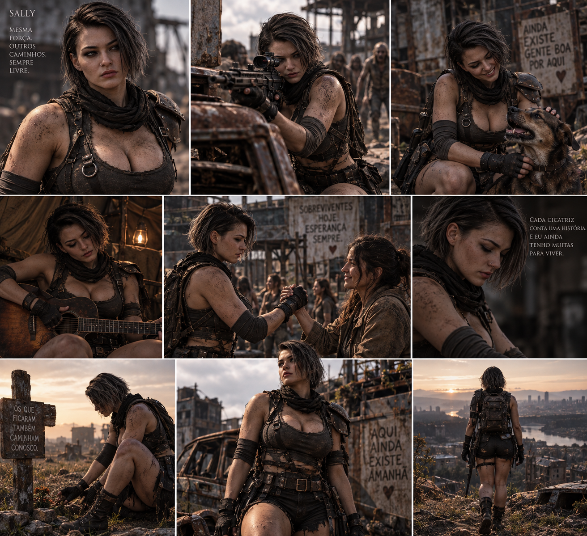

Os nomes que nunca conheceu
Sally cresceu sem conhecer os pais biológicos. O começo de sua história permaneceu como um espaço vazio que nenhuma certidão conseguiu preencher.
ACESSO NEGADO
Ela sonhava vestir um distintivo. Quando o mundo acabou, descobriu que proteger alguém nunca dependeu de possuir um.
Sally cresceu sem conhecer os pais biológicos. O começo de sua história permaneceu como um espaço vazio que nenhuma certidão conseguiu preencher.
ACESSO NEGADOA família adotiva estava longe de ser um bom exemplo. Ainda assim, Sally foi grata por terem lhe dado um teto — mesmo que aquele lugar nunca tenha se tornado o lar que imaginava.
DADOS PARCIALMENTE CENSURADOSEla queria sair, mudar de vida e vestir um distintivo. Queria transformar o próprio passado em motivo para proteger outras pessoas. O Dia D reservou outro caminho.
CARREIRA INTERROMPIDACercada por uma horda, Sally encontrou Nicolai. Ele a salvou; ela despertou nele a coragem que ainda não sabia possuir. Para os dois, aquele resgate marcou o começo de uma identidade nova.
Ele encontrou coragem. Ela encontrou alguém que não a deixaria para trás.

Este arquivo preserva somente os registros individuais de Sally. Os vínculos afetivos permanecem guardados em um dossiê próprio.
Uma gravação preservada de Sally e Nicolai. O arquivo confirma a proximidade entre eles; o restante será revelado pela história.
RETORNAR AO ARQUIVO DE NICOLAI →